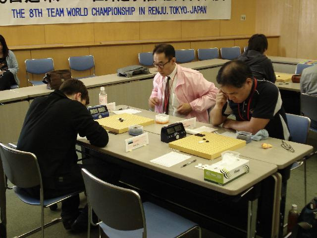
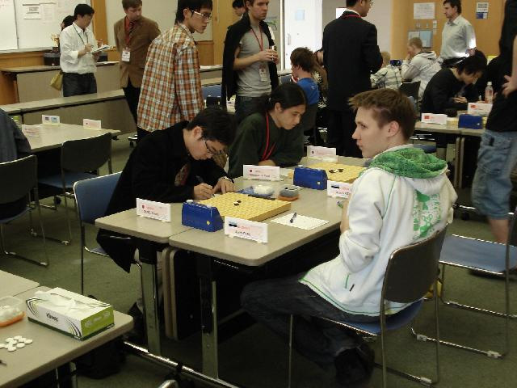
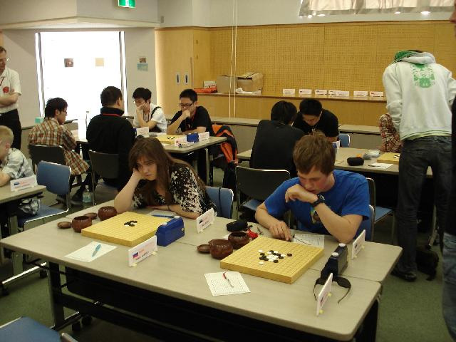
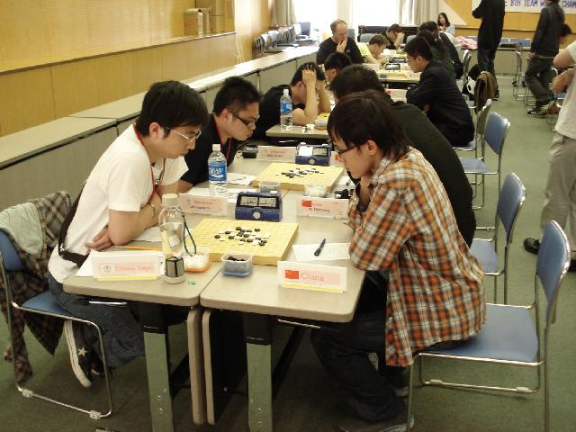

Ando露脸
Thank you（河村） so much for the photos and comments! I cheer for Estonian team of course! I think psychologically Estonian team is in the best situation - Other 3 teams need the first place so much, so it will make them more nervous. :P
yagokoro
Oh, my god! What a bad performance for Russian team, Yuriy Tarannikov, you must go there, if you still use blackstone to play offline games under ID mda904 in renjuoffline site, your renju skills would decline, at that time, no one can save Russian renju!
貌似俄罗斯人 评论挺有意思的 XD “再用黑石下慢棋就没有人拯救俄罗斯连珠了！” 哈哈